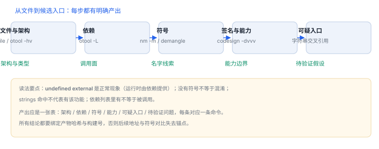

静态侦察：从 IPA 到符号
先用命令把“文件是什么”问清楚，再谈它“做什么”
静态侦察的产出应该是一张表：架构、依赖、符号、能力、可疑入口。每一条都能用一条命令验证，而不是靠印象。
1. 产物来源
| 来源 | 拿到什么 | 必须记录 |
|---|---|---|
| Xcode 归档 | 归档包、符号文件 | 构建号、工具链版本 |
| 导出的分发包 | 可安装包或应用包 | 包哈希 |
| 构建目录 | 未打包的产物 | 与归档是否同一构建 |
先固定“分析的是哪一份产物”：没有哈希与构建号，后面的符号与地址对比都会失去意义。
2. 包结构：五处必须记录
| 位置 | 内容 | 关注点 |
|---|---|---|
| 主可执行文件 | Mach-O | 架构、加密标记、签名 |
Frameworks/ | 内嵌框架 | 自有还是第三方、是否带符号 |
PlugIns/ | 扩展 | 独立签名与能力 |
Info.plist | 配置与声明 | URL scheme、后台模式、用途文案 |

3. 命令矩阵
| 命令 | 回答什么 | 关键输出 |
|---|---|---|
file | 架构与类型 | universal / Mach-O 64-bit |
otool -hv | 文件头 | filetype、ncmds、flags |
otool -L | 依赖 | 安装名与版本约束 |
nm -m | 符号与可见性 | undefined/external/non-external |
codesign -dvvv | 签名与标识 | Identifier、CDHash、Team |
4. 实机输出与读法
MH_MAGIC_64 ARM64 E USR00 EXECUTE 20 1712 NOUNDEFS DYLDLINK TWOLEVEL PIE读法：EXECUTE 是文件类型；20 与 1712 是加载命令条数与总长度；PIE 表示位置无关，运行期基址随机；TWOLEVEL 是两级命名空间，符号绑定到具体库。
/bin/ls (for architecture x86_64):
(undefined) external __DefaultRuneLocale (from libSystem)
(undefined) external ___assert_rtn (from libSystem)
(undefined) external ___error (from libSystem)读法：undefined external 是“我这里没有实现，运行时从 libSystem 取”。这类符号是正常现象，不代表缺失缺陷；只有运行时找不到实现才报 Symbol not found。
动态链接程序必然带
undefined external，它们由依赖库在运行时提供；只有解析失败才是问题。/bin/ls (for architecture x86_64):
__DefaultRuneLocale
___assert_rtn
___bzero
___errornm -u 只给名字，不带来源；配合 nm -m 才能看到 (from libSystem) 这类归属信息。排查“符号找不到”时，先确认它在依赖的库里是否存在导出。
/usr/bin/ssh (for architecture x86_64):
0000000100000000 T __mh_execute_header
/usr/bin/ssh (for architecture arm64e):
0000000100000000 T __mh_execute_header可执行文件几乎不导出符号——主程序的能力都在内部调用里。找入口要靠未定义符号、字符串与调试信息，而不是“导出列表”。
5. 符号与名字
| 符号形态 | 含义 | 分析价值 |
|---|---|---|
_OBJC_CLASS_$_Xxx | Objective-C 类 | 类名可直接用于断点 |
-[Xxx method:] | 实例方法 | 选择子即 hook 入口 |
$s... | Swift 修饰名 | demangle 后得到模块与签名 |
| 无符号 | 已剥离 | 改用字符串与交叉引用 |
nm -gU YourApp | awk '{print $3}' | grep '^_\$s' | head -20 | xcrun swift-demangleContents of (__TEXT,__cstring) section
00000001000048e5 6e696200 00736c2f 78696e55 33303032读法：每 4 字节按小端显示。第一组 6e696200 按字节还原是 00 62 69 6e（\0bin），第二组 00736c2f 是 2f 6c 73 00（/ls\0）。直接按 ASCII 读会得到乱序字符，这是很多人第一次看 otool -s 时的困惑。
6. 常见误读
- “有未定义符号就是有问题”：动态链接程序本来就有。
- “strings 命中就代表有该功能”：可能来自资源或日志模板。
- “没符号等于被混淆”：发布构建剥离符号是常规操作。
- “依赖里有就等于被调用”：弱链接与间接依赖都会出现在列表里。
7. 一次真实排查记录：符号全无
- 现象：
nm输出只有几十个符号，几乎找不到业务函数。 - 先判断：是“被剥离”还是“看错了切片”；通用二进制要按架构分别看。
- 换线索：用字符串检索接口路径与错误文案，再找引用该字符串的函数。
- 交叉验证：在运行时对候选地址下断点，确认它真的被调用。
- 结论与限制：记录“发布构建已剥离符号”，并注明候选入口来自字符串推断，未经运行确认前属于推断。
8. 工程权衡：先静态还是先动态
| 顺序 | 收益 | 风险 |
|---|---|---|
| 先静态后动态 | 范围收敛，断点打得准 | 静态看不懂时容易久拖 |
| 先动态后静态 | 快速看到真实调用 | 缺少模型，容易只看到碎片 |
| 交替推进 | 每步都有验证 | 需要严格记录，否则反复 |
推荐“静态给候选、动态做确认、再回到静态读细节”的交替节奏，而不是一次性把静态做完。
__PAGEZERO
__TEXT
__text
__TEXT
__stubs读法：在 Mach-O 上直接 strings，最先吐出来的是段名与节名，不是业务字符串。要筛业务线索，先跳过头部几 KB，或配合 grep 过滤可打印且像 URL / 错误的行。
/usr/bin/ssh (for architecture x86_64):
U _AES_encrypt
U _AES_set_encrypt_key读法：U 表示未定义，没有大小列——大小只有在符号定义处才有。因此 nm -S 对“找函数长度”无效，要长度得看反汇编或 DWARF。
9. 自测
- 为什么要先记录产物哈希，再谈符号与地址？
undefined external在什么情况下是正常的？- Swift 符号为什么要 demangle，它编码了哪些信息？